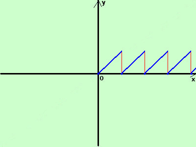

|
sviluppo tracciare il grafico della seguente funzione y = x-n se n≤x<n+1 ∀ x∈ℜ e n∈N  e' la cosiddetta funzione "dente di sega" Nei punti dove assume i valori di N la funzione e' discontinua la funzione, definita solamente per x≥0 e' composta da segmenti obliqui in blu il risultato finale |